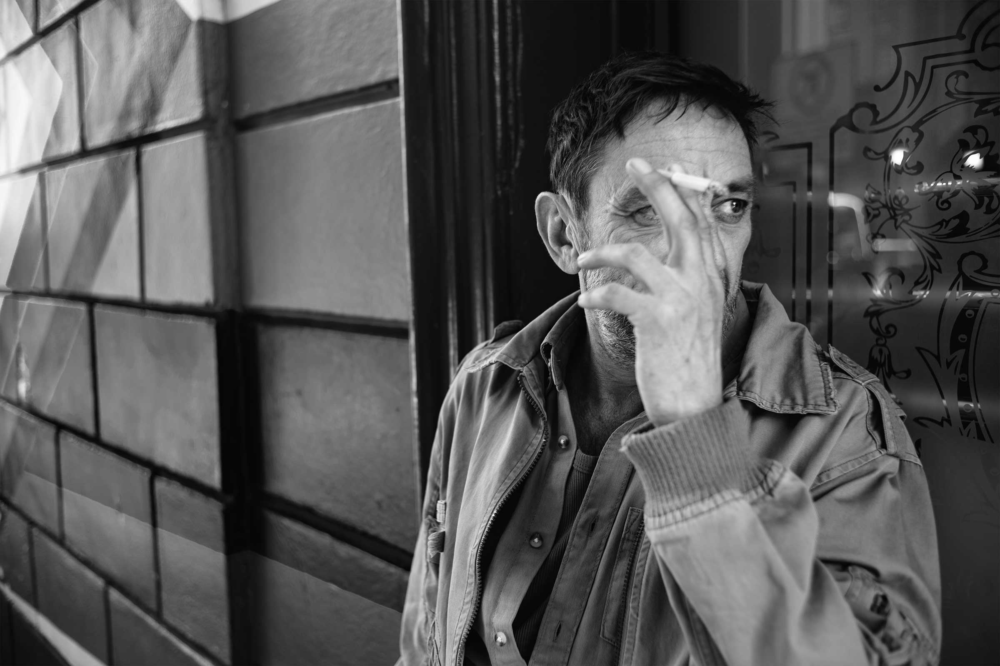
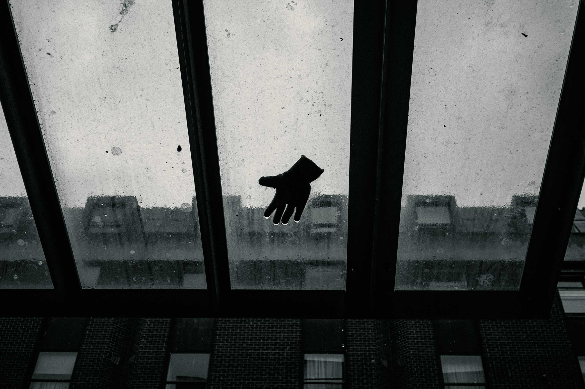
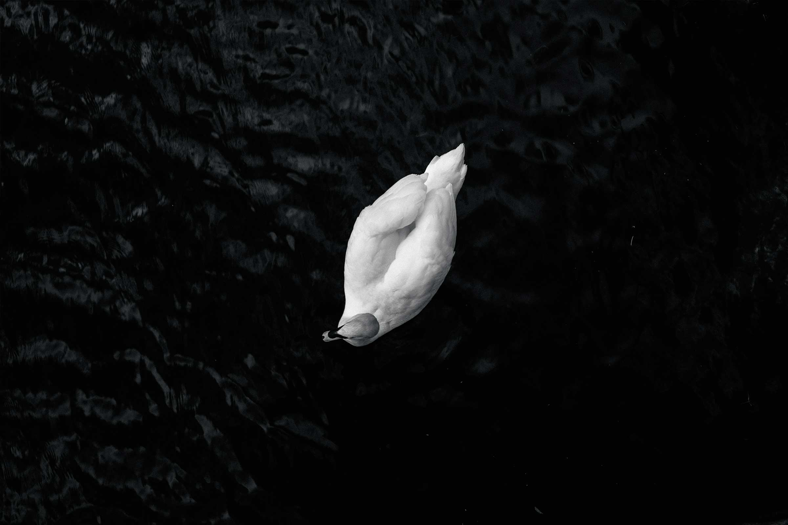
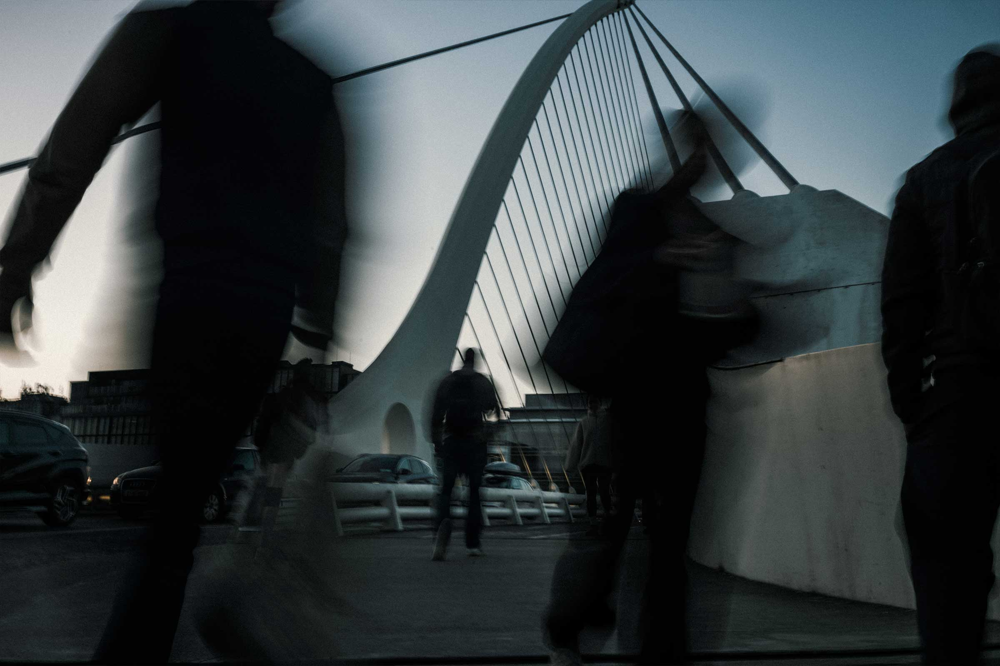
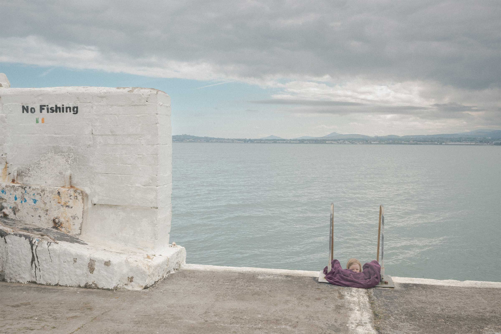

Vinicius Banhara
Photographer
Exploring displacement, distance and belonging through a poetic approach to documentary photography.
Work
About
Vinicius Banhara
Vinicius Banhara is a Brazilian photographer based in Dublin, Ireland. His work moves between street and documentary photography, as well as a more poetic and contemplative approach, exploring people, place, identity and the different ways we experience a sense of belonging.
His practice is rooted in observation. Walking, waiting and allowing encounters to shape the work are central to his process. He is drawn to quiet, ambiguous and often fleeting moments, seeking not only to document what he encounters, but also to reveal the atmosphere, emotions and relationships that exist between people and the spaces they inhabit.
Banhara studied Social Sciences and Marketing, and his interest in society and human behaviour continues to influence his photographic approach. He is currently developing his practice through independent projects and mentorships with Brazilian painter and printmaker Sergio Fingermann and photographer Osvaldo Santos Lima.
His ongoing project Limiares explores displacement, identity and the space between belonging and being a foreigner, reflecting on the experience of living between places and cultures.